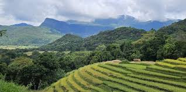

Land Degradation
Land degradation is the decline in land quality caused by human misuse and natural processes.

About
Land degradation results from deforestation, overuse of water, mining, and urbanization. It reduces soil fertility, disrupts ecosystems, and can lead to desertification.